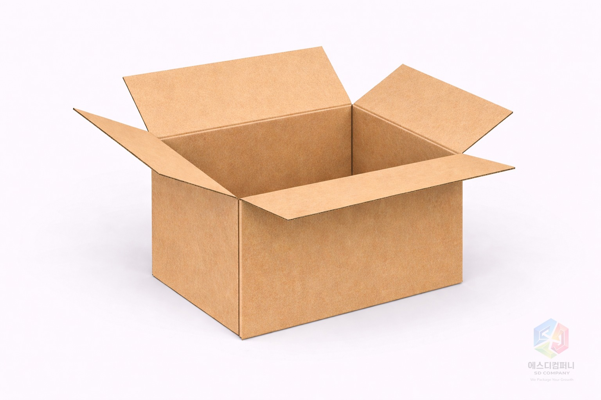
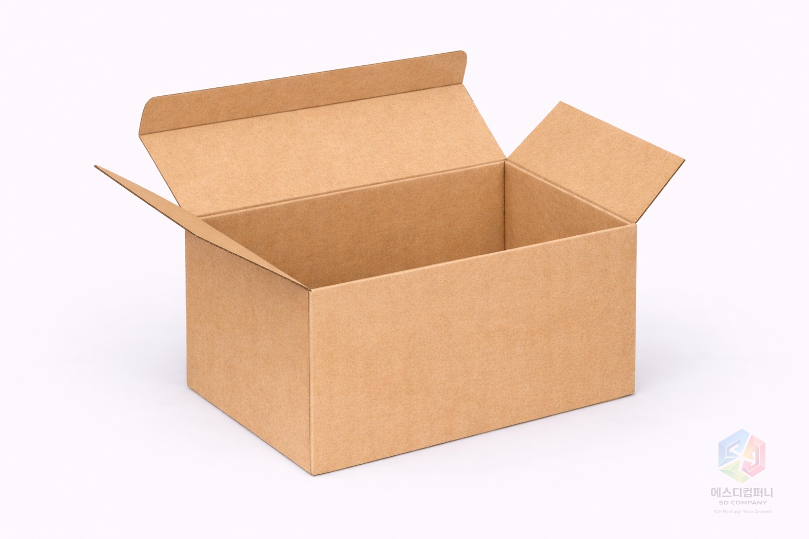
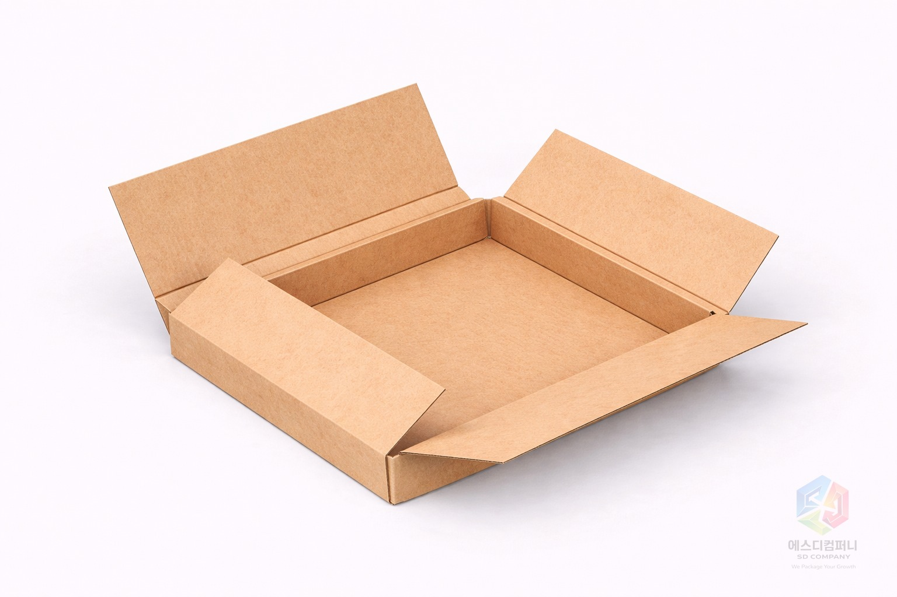
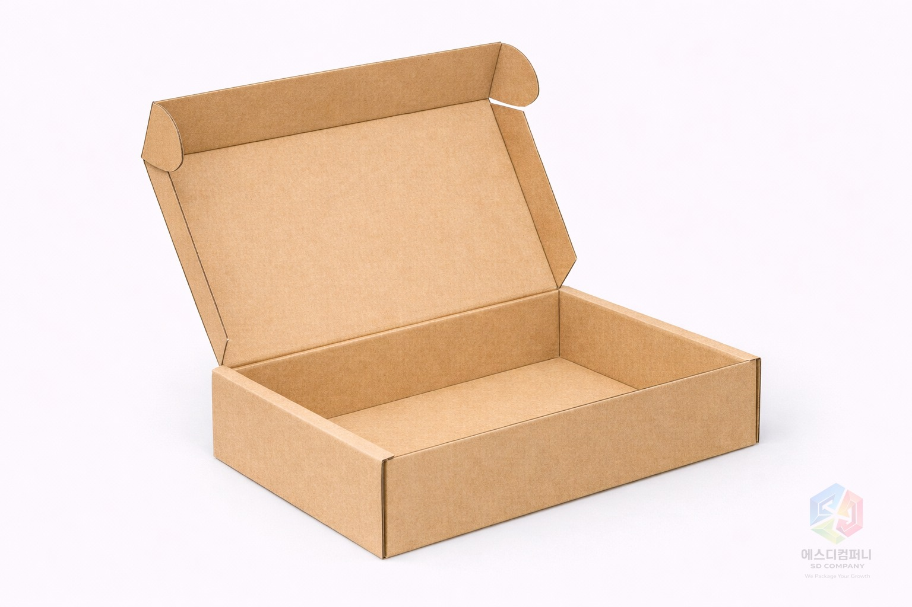
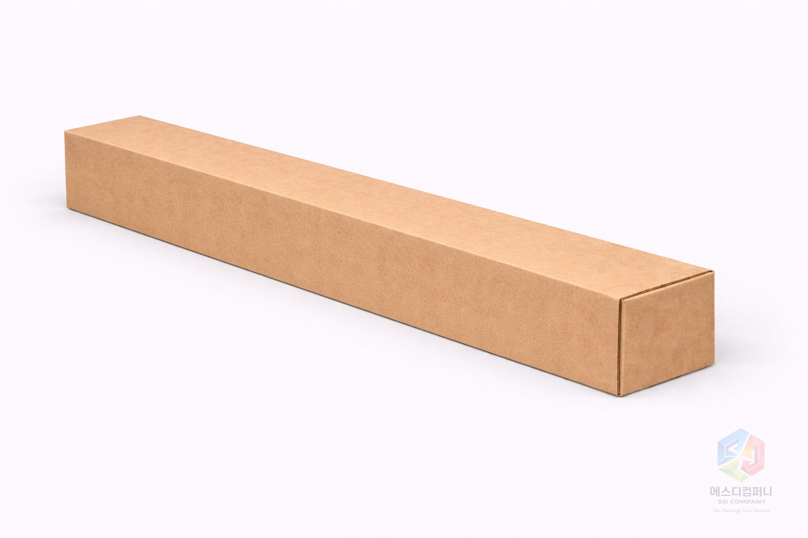

A형 박스
가장 기본 구조지만 가장 범용적인 타입입니다. 상하 플랩을 접어 마감하는 방식이라 제작 효율이 좋고, 택배·물류·일반 출고 포장에 두루 쓰기 좋습니다.
출고, 물류, 식품, 쇼핑몰 포장 등 실제 쓰임에 따라 많이 찾는 구조를 순서대로 정리했습니다.

가장 기본 구조지만 가장 범용적인 타입입니다. 상하 플랩을 접어 마감하는 방식이라 제작 효율이 좋고, 택배·물류·일반 출고 포장에 두루 쓰기 좋습니다.

상하가 분리되는 구조라 개봉감이 안정적이고, 제품을 정갈하게 담아내기 좋습니다. 세트 포장이나 반복 개봉이 있는 패키지에 잘 맞습니다.

접착보다 조립성과 작업 편의에 초점을 둔 구조입니다. 현장 포장 속도를 높이고 싶을 때 유리하며, 다양한 맞춤 응용이 가능합니다.

뚜껑과 몸통이 자연스럽게 이어지는 형태로, 외관이 깔끔하고 쇼핑몰 출고용으로도 선호도가 높습니다. 비교적 간결한 구조라 브랜드 패키지에도 잘 어울립니다.
피자박스 계열로 많이 익숙한 구조입니다. 납작한 높이와 넓은 바닥면을 활용해 음식, 굿즈, 서류형 패키지 등 평평한 제품군을 담기 좋습니다.

상단이 트레이처럼 열리는 구조로 진열감이 좋습니다. 제품을 보여주는 역할까지 고려한 포장에 적합합니다.

손잡이나 휴대성을 고려한 변형 구조로 이해하면 쉽습니다. 이동 편의가 필요한 제품이나 테이크아웃형 패키지에 잘 맞습니다.

길고 슬림한 지관형·직사각형 포장에 가까운 구조입니다. 포스터, 도면, 긴 부자재처럼 직선 길이가 중요한 제품에 적합합니다.